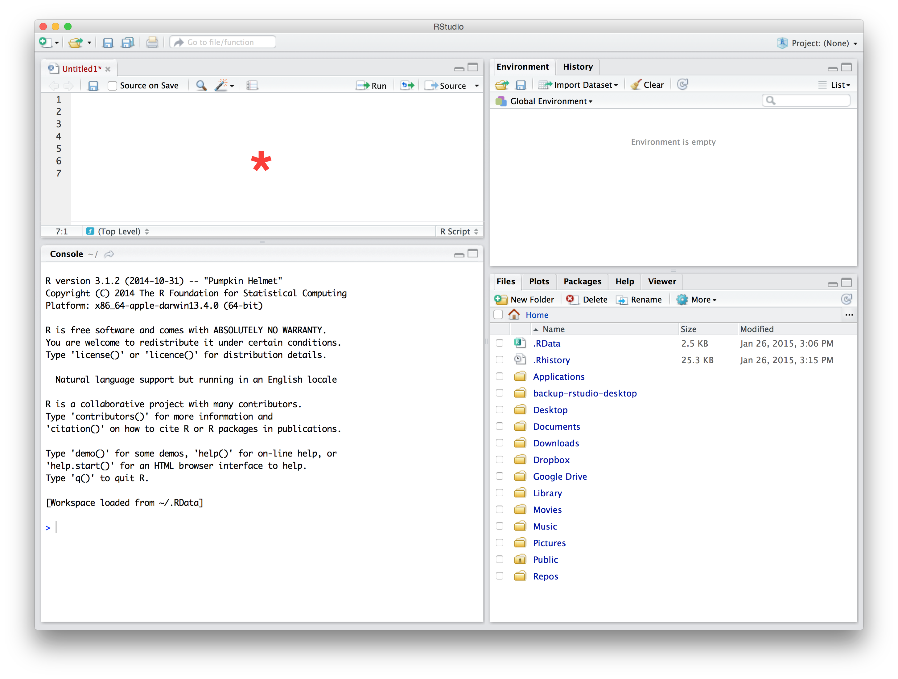
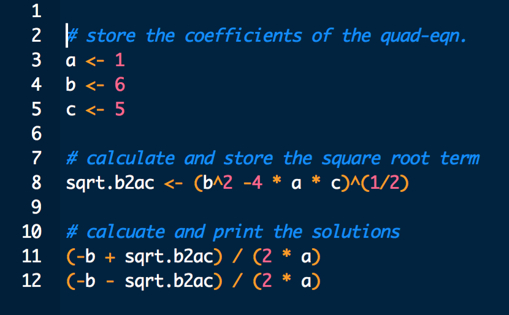
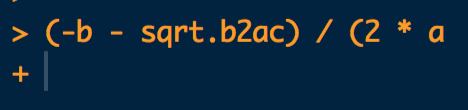

A Using R with RStudio
A.1 Working with scripts
We’ve seen that using variables is useful because it enables us to break down a problem into a series of simpler steps. However, so far we’ve only been working in the Console. If we want to reuse a calculation when we’re working like this, we have to change a variable or two and then evaluate the expressions that do the job of solving an equation, make a graph, whatever. We also have to do all of this in the correct order, or things will not work as intended.
We can see that working in the Console is not going to be practical most of the time. So what should we do? The answer is: put our sequence of R expressions into a text file, called a script. Calling it a script makes it sound a bit fancy and clever—“I spent all day debugging my script.” It is not. It is a boring text file that could be opened up in something like Notepad.exe. We just call it a script to signify the fact that the text contained in the file is a series of instructions telling our computer to do something.
A.1.0.1 Don’t work directly in the Console
Working directly at the Console is the simplest way to use R, but we don’t recommend working this way unless you only need to do something very simple that involves a handful of steps. For more complicated activities you should always store your instructions in a script.
A.1.1 Writing scripts in RStudio
To open a new script in RStudio navigate to File > New File > R Script. This will open the new file in a fourth pane. This pane is the Source Code Editor we mentioned in the [Get up and running with R and RStudio] chapter. The name of the tab where this new file lives will be set to Untitled1 if we haven’t opened any other new R Scripts. Here is what RStudio looks like after we do this (we’ve highlighted the new pane with a red asterisk):

When we work with a script we type the required sequence of R expressions into the Editor pane, not directly into the Console. This is important—if we mix and match mistakes happen. The worst of these is that we write a script that seems to work, only to find it is broken when we open it up and use it again later. This usually happens because we typed something into the Console that is needed to make the whole script run when we were preparing it, but then forget to put it into the script. Just don’t switch between using the Console and the Editor to avoid this.
The easiest way to appreciate the benefits of using a script is to work with one. Here are a few lines of R code to copy-paste into the new Editor pane…
a <- 1
b <- 6
c <- 5
sqrt.b2ac <- (b^2 -4 * a * c)^(1/2)
(-b + sqrt.b2ac) / (2 * a)
(-b - sqrt.b2ac) / (2 * a)…and here’s a partial screenshot of how the Editor pane might look (the details depend on how RStudio is set up):

Notice that parts of the R code is formatted by colour. This is called syntax highlighting. Syntax highlighting is a must have feature of any Editor. In a nutshell, syntax is a bit like the grammar of a computer language. It is the set of rules that determine how we form valid expressions, assign variables, and so on. The purpose of syntax highlighting is to draw attention to different components of syntax. We can see that when we use the Cobalt highlighting option, RStudio sets the background to black and displays variables in white, parentheses and arithmetic operators in orange, and numbers in red. It doesn’t matter so much what the colours are. What matters is that we have a visual means to distinguish these different kinds of elements, making it much easier to read a script.
Choose your own colour scheme
The first thing you will probably notice is that this Editor looks a little different from yours. We said earlier that RStudio was highly customisable. What we did above was change the way it does something called syntax highlighting. You can do this by navigating to Tools > Global Options..., selecting the Appearance button, and picking the Cobalt option under Editor theme.
The other kind of elements RStudio has highlighted are in blue. We added these. They are called comments. Comments in R always start with a # symbol—this is called the “hash”" symbol (also known as the ‘pound’ symbol to North Americans of a certain age). Lines that start with # are completely ignored by R. They exist only to allow us, the developers of a script, to add notes and explanations that remind us how it all works.
A.1.2 Running scripts in RStudio
The whole point of writing a script is ultimately to run it. The phrase “run our code” is shorthand for “send a number of R expressions to the R interpreter to be read and evaluated.” The latter is tedious to write (and read) over and over again, so we will just write “run your/my/our code.” We could run the code in the above script by copying and pasting it into the Console, but this is inefficient. Instead of relying on cut and paste, RStudio gives us different ways to run our code:
There is a
Runbutton at the top right of the Editor pane. As we might imagine, clicking on this will run some code. If we haven’t highlighted anything in the Editor, this runs whichever line the cursor is at, i.e. it runs just that one line. If we had highlighted a region inside the Editor, this button will run all of that in sequence.No one likes clicking buttons. Luckily, pressing Control+Enter (or Command+Enter on a Mac) does exactly the same thing as the
Runbutton. It also uses the same rules to decide which bits of code to run or not7.
Now that we know how to ‘run our code,’ we can run every line in the script we just started. Here’s what should happen at the Console when we do this:
a <- 1
b <- 6
c <- 5
sqrt.b2ac <- (b^2 -4 * a * c)^(1/2)(-b + sqrt.b2ac) / (2 * a)## [1] -1(-b - sqrt.b2ac) / (2 * a)## [1] -5This works exactly as though we typed or pasted the sequence of R expressions into the Console, hitting Enter each time we get to the end of a line. What this means is that we can use this script to find the solutions to any quadratic equation with ‘real roots.’ All we have to do is edit the values assigned to a, b and c and then rerun the whole script. We can’t just rerun bits of it because everything is designed to work together, in sequence.
Now that we have a script that does something a little bit useful we might wish to reuse it at some point. It’s just a text file, so we can save the script as we would any other file. We can do this using the familiar menu-based approach (File > Save As...) or via the keyboard shortcut Control+S (or Command+S on a Mac). The only thing to keep in mind is that we must use the file extension .R or .r when we name the file, e.g. my_great_script.R. This is because RStudio uses the file extension to detect the fact that a file is an R script and not an ordinary text file. If we don’t do this, then next time we open up the file in RStudio we won’t be able to access the fancy Editor features like syntax highlighting, nor will we be able to send lines to the Console without using copy-paste.
From now on always work with scripts. No more typing into the Console!
Do not use install.packages in scripts
Because installing a package is a “do once” operation, it is almost never a good idea to place install.packages in a typical R script. A script may be run 100s of times as we develop an analysis. Installing a package is quite time consuming, so we don’t really want to do it every time we run our analysis. As long as the package has been installed at some point in the past it is ready to be used and the script will work fine without re-installing it.
A.2 Using projects in RStudio
[COMPLETE ME]
A.3 Spotting problems
We may as well get something out of the way early on. It’s painfully easy to accidentally ask R to do something that contains an error of some kind. Mistakes happen all the time when writing R code—everyone does it. It’s not a problem when this happens. When it does though, it’s important to step back and work out what went wrong.
A.3.1 The dreaded +
Be careful when highlighting code to run. RStudio will run exactly the text that is highlighted. If we start or finish the highlighted region in the middle of an expression then one of three things will usually happen. If we’re lucky we’ll generate an error because we ran an invalid partial expression. We say this is lucky because the error will at least be easy to spot. If we’re unlucky, we might end up running part of an expression that is itself a valid expression, but does not do what we had intended. This is harder to spot because it won’t generate an error, and it will probably create problems further down the line.
The third outcome is that the Console will look something like this:

What happened? Look carefully at the little snippet of R code we sent to the Console. It’s not a complete R expression, because it is missing a closing parenthesis: ). When R receives only part of an expression like this, which has correct syntax but is not complete, it sits and waits for the rest of the expression. This is what the + at the Console signifies. When we see this we have two options. We can manually type in the missing part of the expression and hit Enter, or (better) we can hit the Escape key to return you to the prompt > and start again. The first option is rather error prone so we would generally prefer the latter.
A.3.2 Errors
Here is an example of what happens at the Console when we generate an error:
xyz + 2## Error in eval(expr, envir, enclos): object 'xyz' not foundIn general terms, what happened is that R read in the instruction xyz + 2, tried to evaluate it, and found it could not. This is because the variable xyz does not exist, i.e. we never made a variable called xyz. Upon running into the error, R printed something to the screen to tell us we’ve made a mistake (“Error: object ‘xyz’ not found”).
When this happens we say R has ‘thrown an error.’ We know its an error because the message is in a warning colour (probably red or orange—it depends how RStudio is set up) and contains the word Error. The bit after the : is an attempt by R to tell us what went wrong. Always read the error messages. They will be incomprehensible at first, but they will eventually start to make more sense and become helpful (usually—sometimes they make no sense whatsoever, even to experienced users). This way of learning only works if we read the error messages in the first place though.
We can also run lines of code via the
Code > Run Lines. This is easily the most inefficient method after cut and paste. It’s only there in case we forget our keyboard shortcut or cannot remember where the run button is.↩︎
Comments are important
At this point we just want to emphasise that you should always use comments in your scripts to remind yourself what your R code is supposed to be doing. Use them liberally to help you understand the logic of each script you write. This is another “take our word”" for it situation – if you do not use comments, then when you come back to your precious script in a few weeks/months/years time you will have no idea what it does.